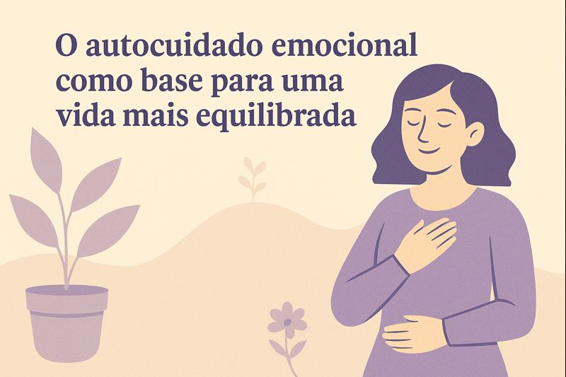

O autocuidado emocional é um caminho essencial para uma vida mais consciente e equilibrada.
O autocuidado emocional como base para uma vida mais equilibrada
Cuidar de si é um ato de amor e responsabilidade. Em meio às exigências do dia a dia, muitas vezes esquecemos de reservar tempo para olhar para dentro, reconhecer limites e nutrir o que nos faz bem.
O autocuidado emocional vai além de momentos de descanso — ele envolve atenção às próprias necessidades, escuta interior e respeito ao próprio ritmo.
Na psicoterapia, o autocuidado é um dos caminhos mais importantes para o equilíbrio. Aprender a se acolher, estabelecer limites saudáveis e reconhecer o próprio valor são passos essenciais para uma vida mais leve e com propósito.
Quando nos permitimos cuidar de nós mesmos, fortalecemos não só a saúde emocional, mas também a capacidade de lidar com os desafios da vida de forma mais consciente e serena.
🌷 Cuidar de si não é egoísmo — é o primeiro passo para viver com mais verdade e equilíbrio.
— Ana Paula Ap. Vieira | Psicóloga Clínica (CRP 06/217114)
Psicoterapia presencial em Itapetininga – SP e online para todo o Brasil.